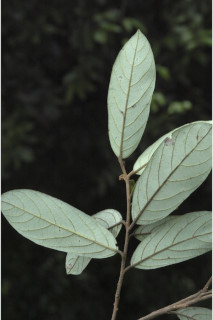
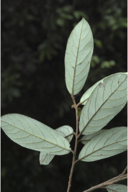
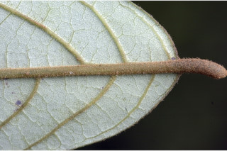
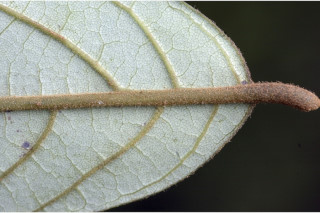

Trees up to 15 m tall.
15 ಮೀ.ವರೆವಿಗೆ ಬೆಳೆಯುವ ಮರಗಳು.
15 മീറ്റര് വരെ ഉയരമുളള മരങ്ങള്.
மரங்கள் 15 மீ. உயரம் வரை வளரக்கூடியது.
Bark light brown, smooth; blaze light orange.
ತೊಗಟೆ ತೆಳು ಕಂದು ಬಣ್ಣದಲ್ಲಿದ್ದು ನಯವಾಗಿರುತ್ತದೆ; ಕಚ್ಚು ಮಾಡಿದ ಜಾಗ ತೆಳು ಕಿತ್ತಳೆ ಬಣ್ಣ ಹೊಂದಿರುತ್ತದೆ.
മിനുസമായ, ഇളം തവിട്ട് നിറത്തിലുളള പുറംതൊലി; വെട്ടുപാടിന് ഇളം ഓറഞ്ച് നിറം.
மரத்தின் பட்டை வெளிறிய ப்ரவுன் நிறமானது, வழுவழுப்பானது; உள்பட்டை வெளிறிய ஆரஞ்சு நிறமானது.
Branchlets terete, rufous tomentose.
ಕಿರುಕೊಂಬೆಗಳು ದುಂಡಾಗಿದ್ದು ನಸುಗೆಂಪಿನಿಂದ ಕೂಡಿದ ಹಳದಿ ಬಣ್ಣ ಹೊಂದಿದ ದಟ್ಟ ಮೃದು ತುಪ್ಪಳದಿಂದ ಕೂಡಿರುತ್ತವೆ.
കനത്തില്, റൂഫസ് രോമിലമായ, ഉരുണ്ട ഉപശാഖകള്.
சிறிய நுனிக்கிளைகள் குறுக்குவெட்டுத் தோற்றத்தில் வளையம் போன்றது, உரோமங்களுடையவை.
Leaves simple, alternate, spiral; petiole 0.5-0.7 cm long, planoconvex in cross section, tomentose; lamina 6-14 x 3-6 cm, elliptic-oblong to elliptic-ovate, apex rounded-obtuse or shortly acuminate, base rounded to acute, tomentose beneath at least on the nerves beneath, glaucous beneath; midrib canaliculate; secondary_nerves ca. 7 pairs; tertiary_nerves distantly percurrent.
ಎಲೆಗಳು ಸರಳವಾಗಿದ್ದು ಪರ್ಯಾಯ ಹಾಗೂ ಸುತ್ತು ಜೋಡನಾ ವ್ಯವಸ್ಥೆಯಲ್ಲಿ -ರುತ್ತವೆ;ತೊಟ್ಟುಗಳು 0.5-0.7 ಸೆಂ.ಮೀ. ಉದ್ದವಿರುತ್ತದೆ ಮತ್ತು ಅಡ್ಡ ಸೀಳಿದಾಗ ಸಪಾಟ ಪೀನಮಧ್ಯ ಆಕಾರದಲ್ಲಿರುತ್ತವೆ ಹಾಗೂ ದಟ್ಟ ಮೃದು ತುಪ್ಪಳ ಸಮೇತವಿರುತ್ತವೆ; ಪತ್ರಗಳು 6-14 X3-6 ಸೆಂ.ಮೀ.ವರೆಗಿನ ಗಾತ್ರ ಹೊಂದಿದ್ದು ಅಂಡವೃತ್ತ-ಚತುರಸ್ರದಿಂದ ಅಂಡವೃತ್ತ -ಅಂಡದವರೆಗಿನ ಆಕಾರ ಹೊಂದಿದ್ದು ದುಂಡಾದ-ಚೂಪಲ್ಲದ ಅಥವಾ ಕಿರಿದಾದ ಕ್ರಮೇಣ ಚೂಪಾಗುವ ತುದಿ,ದುಂಡಾದುದರಿಂದ ಚೂಪಾದ ಬುಡಹೊಂದಿರುತ್ತವೆ.;ಪತ್ರದ ತಳಭಾಗ ಕೊನೇ ಪಕ್ಷ ನಾಳಗಳ ಮೇಲಾದರೂ ದಟ್ಟ ಮೃದು ತುಪ್ಪಳವನ್ನು ಹೊಂದಿರುತ್ತದೆ ಮತ್ತು ಮಾಸಲು ಬೂದು ಹಸಿರು ಬಣ್ಣ ಹೊಂದಿರುತ್ತದೆ; ಮಧ್ಯನಾಳ ಕಾಲುವೆಗೆರೆ ಸಮೇತವಿರುತ್ತದೆ;ಎರಡನೇ ದರ್ಜೆಯ ನಾಳಗಳು ಅಂದಾಜು 7 ಜೋಡಿಗಳಿರುತ್ತವೆ; ಮೂರನೇ ದರ್ಜೆಯ ನಾಳಗಳು ಹೆಚ್ಚಿನ ಅಂತರ ಹೊಂದಿದ್ದು ಎಲೆ ದಿಂಡಿಗೆ ಅಡ್ಡವಾಗಿ ಕೂಡುವಂತವು.
ലഘുവായ ഇലകള്, ഏകാന്തര ക്രമത്തില്, സര്പ്പിളമാണ്; ഛേദത്തില് ഒരുഭാഗം പരന്നും മറുഭാഗം ഉരുണ്ടതുമായ ഘടനയുളള, കനത്ത രോമിലമായ ഇലഞെട്ടിന് 0.5 സെ.മീ തൊട്ട് 0.7 സെ.മീ വരെ നീളം; പത്രഫലകത്തിന് 6 സെ.മീ തൊട്ട് 14 സെ.മീ വരെ നീളവും 3 സെ.മീ തൊട്ട് 6 സെ.മീ വരെ വീതിയും, ആകൃതി ദീര്ഘവൃത്താകാര-ആയതാകാരം തൊട്ട് ദീര്ഘവൃത്തീയ അണ്ഡാകാരം വരെയാകാം, പത്രാഗ്രം വൃത്താകാര-ഉപകോണാകാരംമോ ചെറു ദീര്ഘാഗ്രമോ ആണ്, പത്രാധാരം വൃത്താകാരംതൊട്ട് നിശിതാകാരംവരെയാകാം, കീഴെ ഞരമ്പുകളിലെങ്കിലും, കനത്ത രോമിലമാണ്, നീലരാശികലര്ന്ന കീഴ്ഭാഗം; മുഖ്യസിരചാലുളളതാണ്, ഏതാണ്ട് 7 ജോഡി ദ്വിതീയ ഞരമ്പുകള്; വിദൂരപെര്കറന്റ് വിധത്തിലുളള ത്രിതീയ ഞരമ്പുകള്.
இலைகள் தனித்தவை, மாற்றுஅடுக்கமானவை, சுழல் போன்று அமைந்தவை; இலைக்காம்பு 0.5-0.7 செ.மீ. நீளமானது, குறுக்குவெட்டுத் தோற்றத்தில் பிளேனோகான்வக்ஸ், உரோமங்களுடையது; இலை அலகு 6-14 X 3-6 செ.மீ., நீள்வட்டம்-நீள்சதுரம் முதல் நீள்சதுரம்-முட்டை வடிவானது, அலகின் நுனி வட்டமானது-மழுங்கியது அல்லது சிறிய அதிக்கூரியது, அலகின் தளம் வட்டமானது முதல் கூரியது, அலகின் கீழ்பரப்பு உரோமங்களுடையது, நரம்புகளில் மட்டுமாவது உரோமங்களுடையது, அலகின் கீழ்பரப்பு மெழுகு பூசியது போன்றது அல்லது சாம்பல் கலந்த நீல நிறமானது (க்களாக்கஸ்); மையநரம்பு மேற்பரப்பில் அலகின் பரப்பைவிட பள்ளமானது; இரண்டாம் நிலை நரம்புகள் 7 ஜோடிகள்; மூன்றாம் நிலை நரம்புகள் அகன்ற பெர்க்கரண்ட் போன்றது.
Flowers in short congested axillary or terminal tawny-tomentose panicles.
ಹೂಗಳು ಕಿರುಗಾತ್ರವುಳ್ಳ ನಿಬಿಡವಾದ ಅಕ್ಷಾಕಂಕುಳಿನಲ್ಲಿನ ಅಥವಾ ತುದಿಯಲ್ಲಿನ ಕಂದು ಮಿಶ್ರಿತ ಹಳದಿಬಣ್ಣವುಳ್ಳ ದಟ್ಟ ಮೃದು ತುಪ್ಪಳದಿಂದ ಕೂಡಿದ ಪುನರಾವೃತ್ತಿಯಾಗಿ ಕವಲೊಡೆಯುವ ಪುಷ್ಪಮಂಜರಿಯಲ್ಲಿರುತ್ತವೆ.
പൂക്കള്, ഒട്ടുന്ന രോമിലമായ, കുറിയ കനത്ത, കക്ഷീയമോ ഉച്ഛസ്ഥമോ ആയ പാനിക്കിളുകളാണ്.
மலர்கள் இலைக்கோணங்களில் அல்லது தண்டின் நுனியிலுள்ள குட்டையான பேனிக்கிள், உரோமங்களுடையது.
Drupe, ovoid-ellipsoid, black; 1-seeded.
ಬೆರ್ರಿ ಅಂಡ-ಅಂಡವೃತ್ತದ ಆಕಾರದಲ್ಲಿದ್ದು ಕಪ್ಪು ಬಣ್ಣ ಹೊಂದಿದ್ದು ಒಂದು ಬೀಜವನ್ನು ಒಳಗೊಂಡಿರುತ್ತದೆ.
ഒറ്റവിത്തുളള കായ, കറുത്ത നിറത്തിലുളള അണ്ഡാകാര - ദീര്ഘഗോളാകാര ബെറിയാണ്.
முழுச்சதைகனி (பெர்ரி), முட்டை-நீள்வட்டமானது, கருப்பு நிறமானது; விதை ஒன்றுடையது.

 

 
